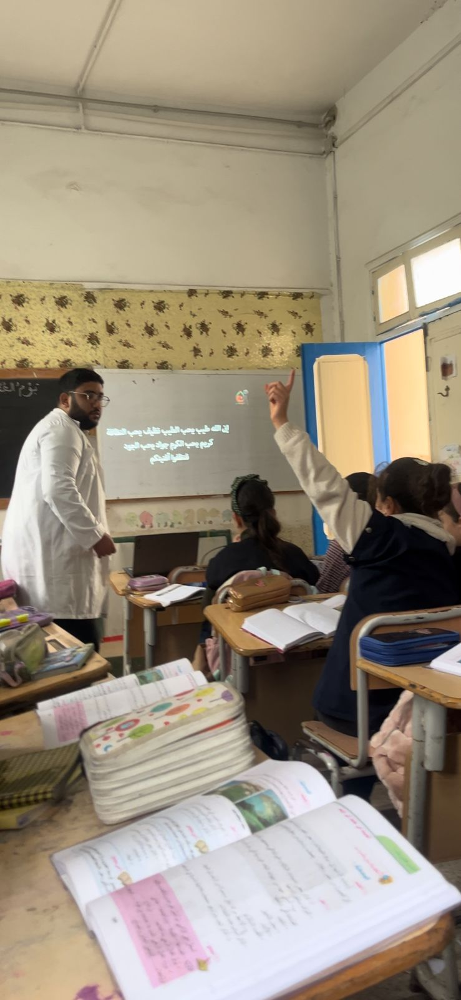
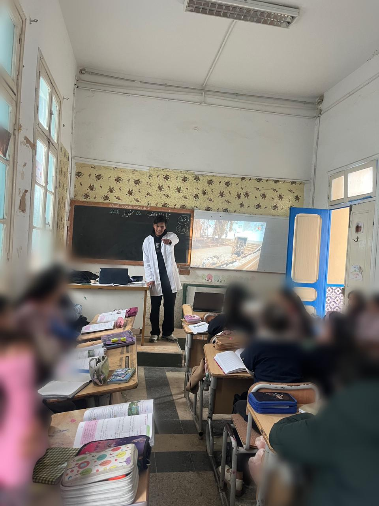
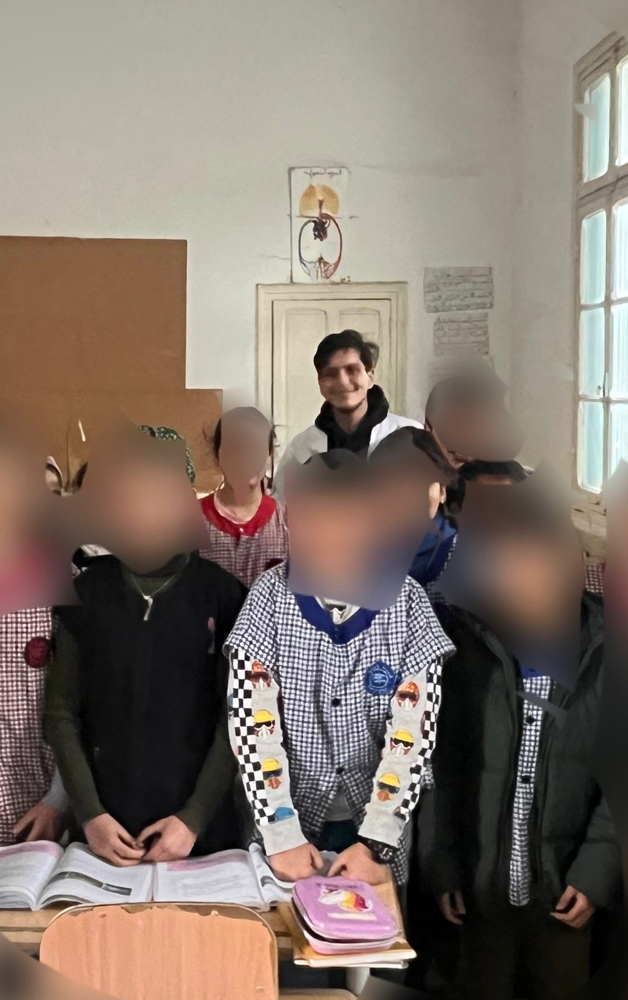

جاري التحميل...
نهج مبتكر لتحفيز الخيال وتشجيع الأطفال على التحدث بثقة وتلقائية.
اكتشف المزيديعتبر التعبير الشفهي الأداة الأولى للتواصل والتفكير، وهو حجر الأساس في بناء شخصية التلميذ وصقل مهاراته الاجتماعية.
إزالة الصوت من المشاهد التعليمية يخلق فجوة معرفية تدفع التلميذ لمحاولة ملئها من خلال التخيل والتعبير عن الأحداث بلغته الخاصة.
إطلاق العنان لمخيلة الطفل لتوقع وتفسير الأحداث.
تشجيع التلميذ على التحدث أمام زملائه دون خوف من الخطأ.
اكتساب مفردات وتراكيب جديدة من خلال المناقشة الموجهة.
هو قدرة الفرد على ترجمة أفكاره ومشاعره إلى كلمات وجمل منطوقة ومفهومة للآخرين، مع مراعاة النطق السليم وتسلسل الأفكار.
لأن الصورة المتحركة تجذب انتباه الطفل، وغياب الصوت يجعله هو "المعلق" على الأحداث، مما ينقله من دور المتلقي السلبي إلى المتفاعل الإيجابي.
يتم التقييم من خلال ملاحظة طلاقة التلميذ، صحة التراكيب اللغوية، مدى ملاءمة المفردات للمشهد، وقدرته على التواصل البصري.
تم تطبيق الدراسة على مجموعة من تلاميذ السنة الأولى ابتدائي، لضمان مناسبة الاستراتيجية لخصائصهم العمرية.
تم استخدام مقاطع فيديو قصيرة (1-2 دقيقة)، صامتة، تصور مواقف من الحياة اليومية المألوفة للطفل.
عرض الفيديو أولاً، ثم طرح أسئلة موجهة، تليها محاولات التلاميذ لسرد القصة، وأخيراً التغذية الراجعة.
شاهد الفيديو الصامت بتركيز، ثم أجب عن الأسئلة.



طالب سنة ثالثة تربية و تعليم في المعهد العالي للدراسات التطبيقية في الانسانيات بالمهدية